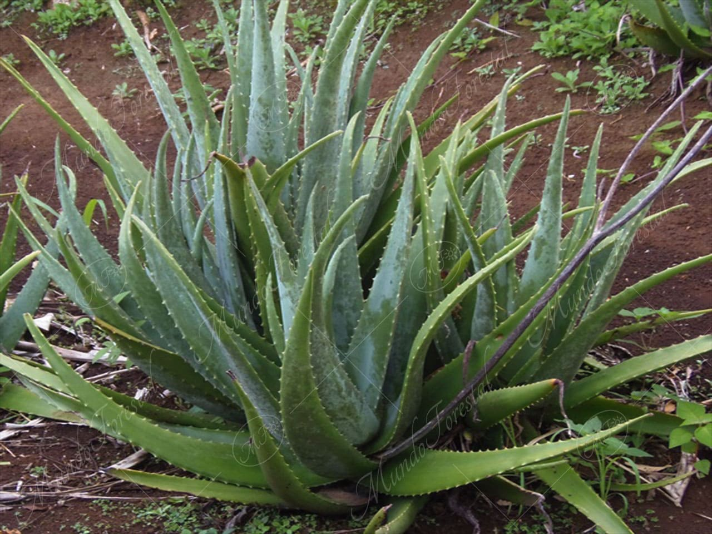
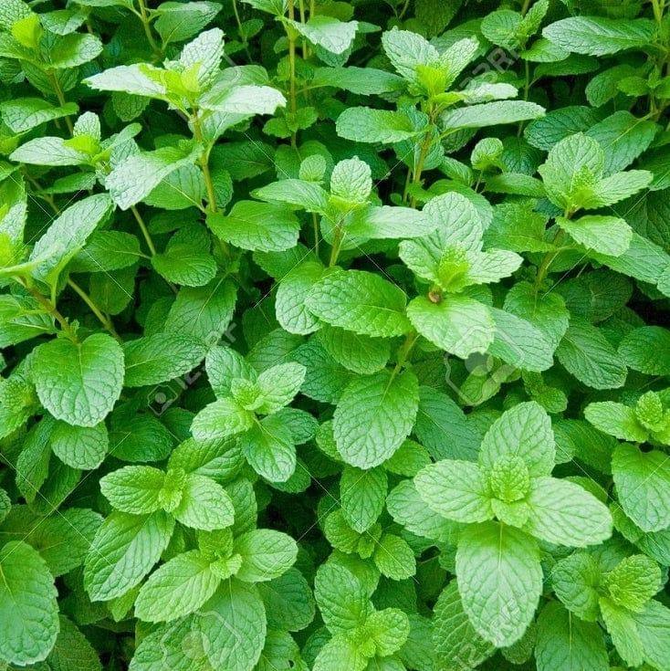
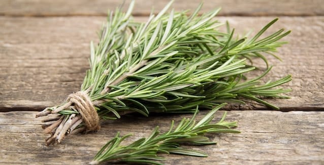
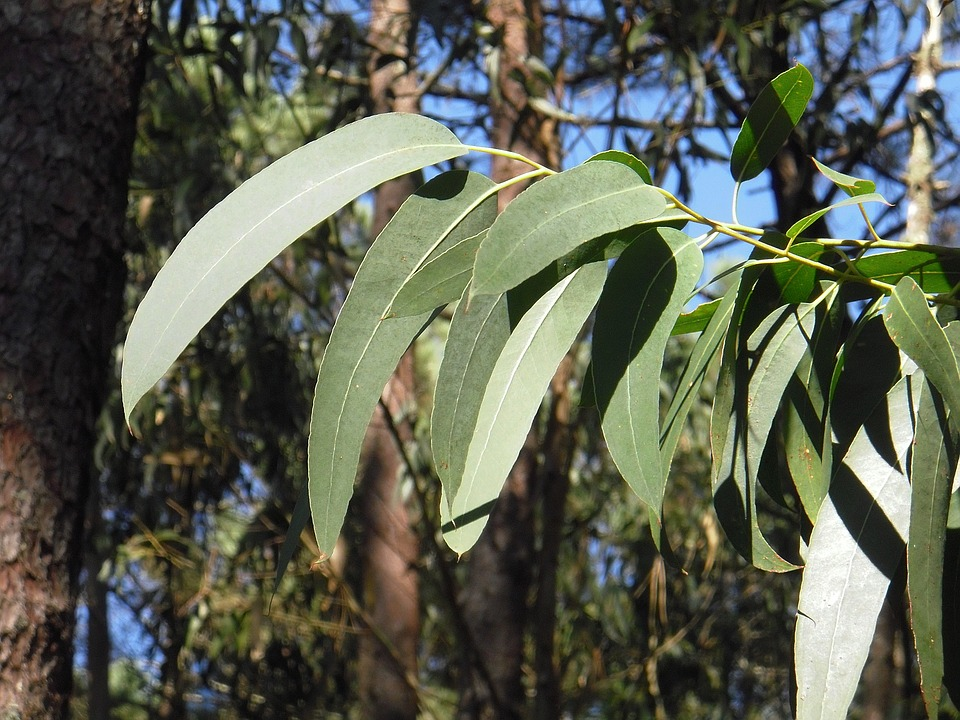

| Nombre de la planta medicinal | Nombre científico | Propiedades curativas | Maneras de uso | Imagen |
|---|---|---|---|---|
| Manzanilla | Matricaria chamomilla | Ayuda a aliviar dolores estomacales, cólicos, inflamación, ansiedad, estrés, indigestión y favorece un mejor descanso gracias a sus propiedades relajantes. | Se consume en infusión o té. También puede utilizarse en compresas para aliviar irritaciones en la piel y reducir inflamaciones. | |
| Sábila (Aloe vera) | Aloe vera | Es cicatrizante, hidratante, antiinflamatoria y ayuda a tratar quemaduras leves, heridas, picaduras, irritaciones y problemas de la piel. | Se extrae el gel de sus hojas y se aplica directamente sobre la piel. También se utiliza en productos naturales para el cuidado corporal. |  |
| Hierbabuena | Mentha spicata | Favorece la digestión, disminuye gases, calma dolores estomacales, náuseas y ayuda a aliviar dolores de cabeza y malestares digestivos. | Se prepara en té o infusión, se agrega a bebidas frescas o se mastican sus hojas para aprovechar sus beneficios. |  |
| Árnica | Heterotheca inuloides | Reduce inflamaciones, alivia golpes, moretones, torceduras, dolores musculares y ayuda en la recuperación de lesiones leves. | Se utiliza únicamente de forma externa mediante pomadas, geles, aceites o compresas sobre la zona afectada. | |
| Romero | Salvia rosmarinus | Mejora la circulación sanguínea, fortalece el cabello, ayuda a la memoria, combate el cansancio y posee propiedades antioxidantes. | Se consume en infusión, se utiliza como aceite para masajes o como enjuague natural para fortalecer el cabello. |  |
| Eucalipto | Eucalyptus globulus | Ayuda a descongestionar las vías respiratorias, aliviar la tos, reducir síntomas del resfriado y facilitar la respiración. | Se emplea en vaporizaciones, inhalaciones de vapor o en infusión para aprovechar sus propiedades medicinales. |  |